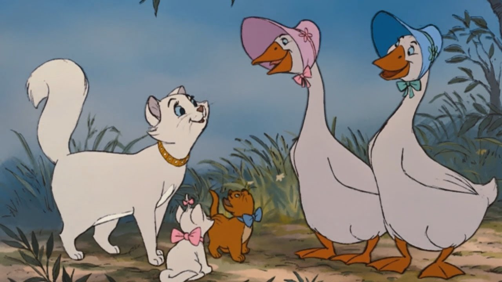
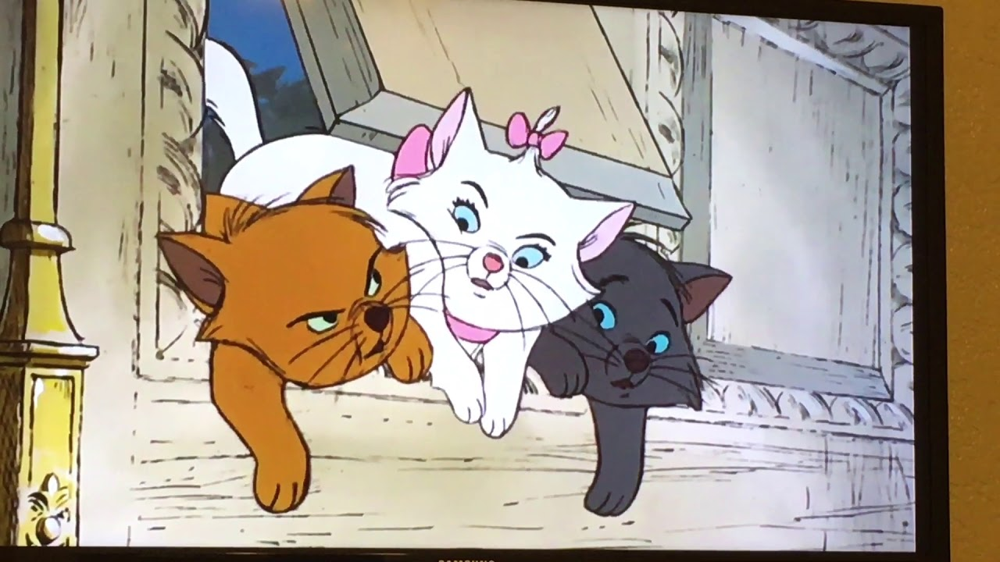
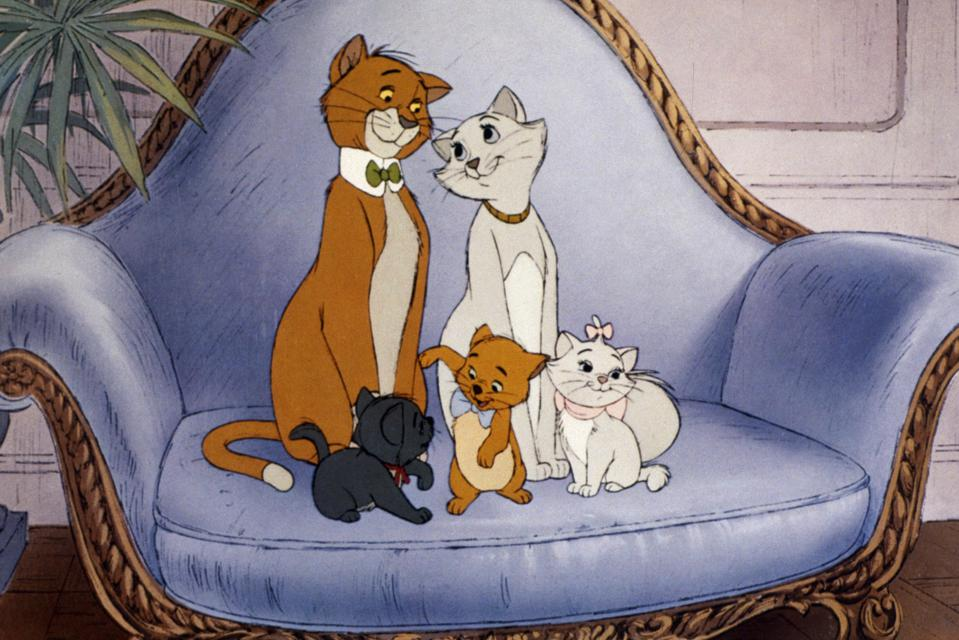
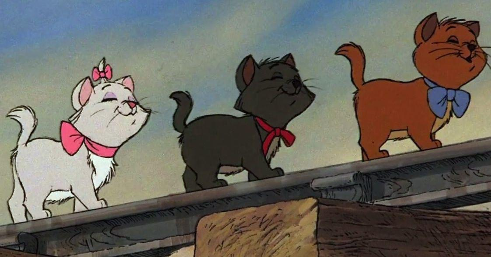
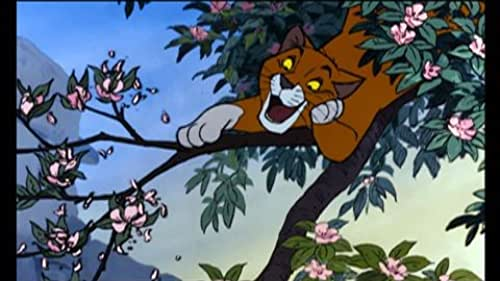
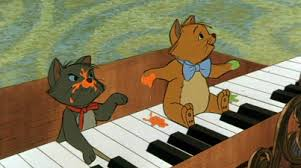
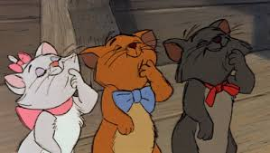
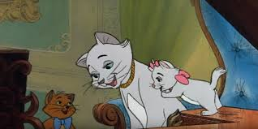
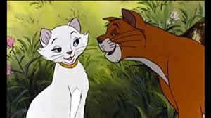

Duchess is very elegant, beautiful, and ladylike, being the pet to an aristocrat. She is very devoted to her owner, Madame Adelaide Bonfamille. She is kind and friendly to everyone. She is both caring and protective toward her children and also tries to encourage them to develop into proper members of French society.
She also is a connoisseur of music and presumably teaches her kittens to sing and play the piano.
Duchess also is shown to be slightly pacifistic, as she scolds her kittens for "play-fighting".
She is sweet and compassionate and is willing and able to make friends with anyone, no matter their background. She also seems to show concern for others, as is evidenced when she calls out to Thomas O'Malley as he floats down the river after he throws Marie to safety.
Duchess is a long-haired purebred white Turkish Angora cat with blue eyes later described as shining like sapphires. She wears a gold, jeweled collar studded with diamonds.
Marie believes herself to be quite the little lady, and so tries to mimic the elegance and propriety of her mother, Duchess. As a result, she can be somewhat prissy and spoiled and is quick to tattle on her brothers when things don't go her way.
Although Marie makes an effort to appear ladylike, she does enjoy the occasional tumble with her beloved siblings and has an insatiable curiosity once Thomas O'Malley opens her eyes to the wonders of Paris.
Marie is a small white purebred Turkish Angora kitten. She has long, white fur and bright blue eyes with long lashes; out of the 3 kittens, she bears the strongest resemblance to her mother.
Her nose and paw pads are light pink, and she has 3 or 4 whiskers on either side of her face.
Marie wears a large pink bow around her neck and another pink bow, which is smaller, decorating a tuft of fur on her head.
Toulouse wishes to meet tough alley cats and often tries to appear tough. He is known for puffing up and attempting to hiss when trying to show how tough he is.
Toulouse is fairly laid-back and easygoing otherwise, being the most playful of the three kittens, despite being the eldest of the three.
He aspires to be a painter and practices his painting daily.
Toulouse has green eyes and long orange fur, with a lighter orange stomach.
He also wears a large blue ribbon around his neck that is tied similarly to a bow tie and straw hat.
Being a kitten, he's fairly small but also seems to be a bit older than his two siblings.
Berlioz is usually very quiet, but mischievous. He enjoys playing the piano, as seen when Duchess asks him to practice his Scales and Arpeggios with his sister Marie.
He isn't easy to impress and can be annoyed rather quickly, usually he's the first to make a snide look or comment toward things he doesn't like.
Still, he's shown to be just as naive and sweet-natured as his siblings.
Berlioz has blue eyes, dark grey fur (practically dark green fur) with a lighter stomach.
He also wears a small red ribbon around his neck that is tied but sometimes falls apart.
Being a kitten, he's fairly small.